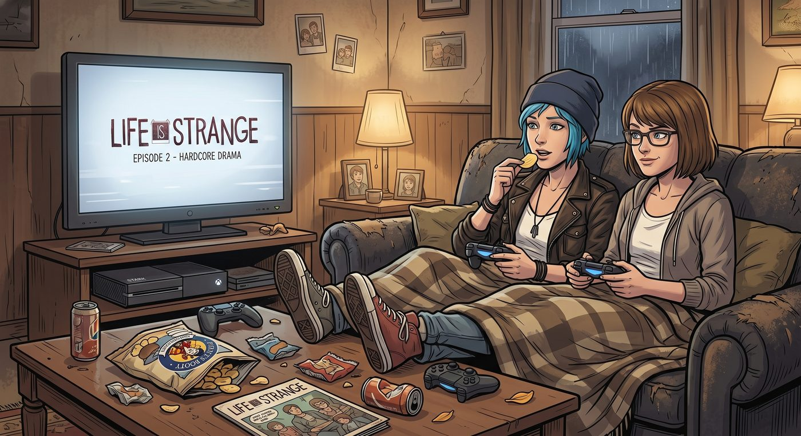

沙發夜:LiS2

雨下了一整天,雙鯨餐廳打烊得早。Chloe 把主機接上客廳的電視,一屁股窩進沙發,把手把扔給 Max。
「聽說二代出了。」她啃著一片洋芋片,含糊不清地說,「Warren 說劇情很硬核。」
「你確定要玩?」Max 挑眉,「上次你被鬼屋遊戲嚇到把手把砸到我臉上。」
「那不算,那次是妳突然尖叫。」
主機開機的音效響起,兩人窩在同一張毯子底下,腳都翹到茶几上。
第一章
開場動畫跑完,肖恩和丹尼爾站在濃煙瀰漫的街角,警察倒在地上,超能力剛炸裂完。
「……」Chloe 愣了兩秒,洋芋片停在半空,「等等。」
「嗯?」
「他們現在要幹嘛?」
畫面切到兩兄弟開始收拾東西,準備跑路。
「不是報警嗎?」Chloe 一把搶過 Max 手裡的手把,操控角色朝反方向走,「打911啊!喂!回頭啊!」
Max 沒搶回來,只是靠在她肩膀上看著螢幕發笑。「Chloe,遊戲不會讓你打911的,那樣故事就結束了。」
「這不科學。」Chloe把手把丟回去,「一個十六歲小孩帶著九歲弟弟,身上估計沒兩百塊,說跑路就跑路?去墨西哥?這計畫是誰批准的!」
「可能跟某個十八歲女生半夜偷開繼父的槍柜、拉著朋友去追一個八年沒見的毒販一樣科學。」Max 頭也不抬地說。
Chloe 嗆到,咳了兩聲洋芋片屑。「……閉嘴。」
畫面繼續跑,兩兄弟走在公路邊,弟弟一臉茫然地問哥哥接下來去哪裡,哥哥支支吾吾說不出個所以然。
Chloe 沒再吐槽了。
她看著螢幕裡那個叫肖恩的男孩,一邊走一邊回頭看,像是還沒完全明白自己剛剛失去了什麼,又要硬撐著給弟弟一個「一切都會沒事」的表情。
「……」
Max 感覺到身邊的人安靜下來,側頭看了她一眼。
「妳還好嗎?」
「還好。」Chloe 的聲音有點悶,「就是,他那個表情。」
畫面裡,弟弟牽著哥哥的手問:「爸爸還會回來嗎?」哥哥沒有回答,只是把弟弟的手握得更緊。
Chloe 沒說話,伸手把 Max 的手也握住了,握得比平常緊一點。
Max 沒問為什麼,只是任由她握著,手把在兩人中間晃來晃去,遊戲角色在螢幕裡停在原地,沒人操作。
過了半晌,Chloe 才低聲說:「我爸走的時候,我大概比丹尼爾大一點點。」她頓了頓,「沒人拉著我的手說『一切都會沒事』。」
Max 沒有接話,只是把頭靠到她肩膀上,兩人就這樣安靜地看著螢幕裡的兩兄弟繼續往前走,誰也沒有伸手去按暫停。
第二章
過了一會兒,劇情走到加油站,一個路人角色開始對著兩兄弟大呼小叫。
氣氛稍微鬆了下來,Chloe 先開口打破沉默:「這位是?」
「路人反派。」Max 拿回手把,「準備。」
那個角色講了兩句台詞,滿嘴陳腔濫調的敵意,毫無來由地針對兩兄弟。
Chloe 皺眉:「這人是吃了炸藥嗎?他們什麼都沒做,他就衝過來罵成這樣?」
「劇本需要一個反派。」
「劇本需要,不代表可以隨便抓個紙片人湊數啊。」Chloe 又抓了一把洋芋片,「我們鎮上是有幾個混蛋沒錯,但他們混蛋也混蛋得有理由——Nathan 是被他爹逼瘋的,David 一開始討人厭是因為他真的怕出事。這位是怎樣,設定檔寫著『反派,職業:生氣』?」
Max 沒接話,盯著螢幕,手指無意識地在手把上敲了兩下。
「怎麼不說話了?」
「沒事。」Max 頓了頓,「就覺得,寫得這麼扁平,反而讓人有點想笑不出來。真正討厭一個人是很複雜的,像這樣隨便貼標籤,好像也是另一種偷懶。」
Chloe 看她一眼,沒再接話,只是把最後幾片洋芋片倒進她手心裡。
劇情繼續跑,弟弟在原野上不小心用超能力弄倒了一棵樹,嚇得手足無措,哥哥手忙腳亂地安撫他。
「……這弟弟脾氣是有點衝。」Chloe 嘀咕,但這次語氣裡沒什麼真的在罵,反倒有點無奈的柔軟,「不過也還好啦,至少他哥沒放棄他。」
「妳這話聽起來很耳熟。」Max 側頭看她。
「閉嘴啦。」Chloe 把毯子往兩人身上拉高了一點,「快玩,我想看接下來。」
窗外的雨還在下,客廳裡只剩電視螢幕的光,兩人窩在同一張毯子底下,手把在她們之間傳來傳去,誰也沒再提起要吐槽的事。